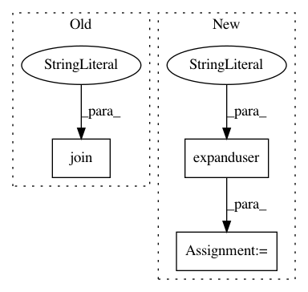

4a9fe9d7db5a1ff19e6c6c338cfb57786acf4aa8,src/python/pants/base/config.py,Config,Config_1,#,100
Before Change
section=DEFAULT_SECTION,
option="pants_distdir",
help="Directory where pants will write user visible artifacts.",
default=os.path.join(get_buildroot(), "dist"))
DEFAULT_PANTS_SUPPORTDIR = ConfigOption.create(
section=DEFAULT_SECTION,
After Change
%(var_name)s will be replaced with the value of var_name.
_defaults = {
"buildroot": get_buildroot(),
"homedir": os.path.expanduser("~"),
"user": getpass.getuser(),
"pants_bootstrapdir": os.path.expanduser("~/.pants.d"),
}
reset_default_bootstrap_option_values(_defaults)
// TODO: Remove these after removing remaining references to them.
In pattern: SUPERPATTERN
Frequency: 4
Non-data size: 3
Instances
Project Name: pantsbuild/pants
Commit Name: 4a9fe9d7db5a1ff19e6c6c338cfb57786acf4aa8
Time: 2014-11-21
Author: benjy@foursquare.com
File Name: src/python/pants/base/config.py
Class Name: Config
Method Name: Config_1
Project Name: vatlab/SoS
Commit Name: 394541392806a620ab8b6bfb606e5bad7cac936c
Time: 2017-01-06
Author: ben.bog@gmail.com
File Name: sos/__main__.py
Class Name:
Method Name: cmd_unpack
Project Name: vilmibm/prosaic
Commit Name: 844b241f93143e8f0f00454f8bccf20df9d05182
Time: 2016-05-28
Author: nathanielksmith@gmail.com
File Name: prosaic/cfg.py
Class Name:
Method Name:
Project Name: vatlab/SoS
Commit Name: affcf8e59f6942e93cee19aa19637ba7f0da20b1
Time: 2017-01-06
Author: ben.bog@gmail.com
File Name: sos/__main__.py
Class Name:
Method Name: cmd_unpack